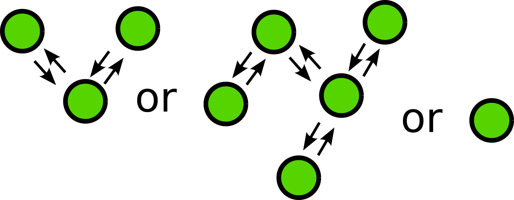

Git Workshop
$ vim .gitconfig
[user]
name = rednaks
email = s@rednaks.tn
signingkey = 336969AC
website = rednaks.tn
twitter = @Alekkhan
github = github.com/rednaks
linkedin = www.linkedin.com/in/alexandrebm
google = +AlexandreBM
[core]
editor = vim
cvs = git
[web]
browser = firefox
- Problèmatique
- Introcution
- Configuration
- Les commandes de base
- Publier
Les mini-projets à la fac :
Powred by
Invonvéniants
- Integration de code difficile
- Pas de possiblitité d'accès simultané sur un fichier
- Engendre des bugs
- Perte de temps
Solutions
Une seule personne qui fait 99% du code- Utilisation d'un CVS: git
C'est quoi Git ?
- Un Logiciel de gestion de version
- Créé par Linus Torvalds
- Qui a modifié un fichier ?
- Quand il l'a fait ?
- Pourquoi ?
Comme SVN alors ?
Oui
Alors pourquoi Git et pas SVN ?
Parceque ...
C'est plus rapide
Parceque ...
C'est compact
| Git | SVN | |
|---|---|---|
| Repo Alone | 24M | |
| Entire Directory | 43M | 61M |
Parceque ...
l'etape on stage

Parceque ...
C'est distribué

Parceque ...
C'est facile à apprendre
Parceque ...
C'est le nouveau "standard"
Android, Apache, Debian, Drupal, Django, Eclipse, Fedora,
Firefox OS(gaia),Gnome, KDE, Linux Kernel, Perl, PHP,
PostgreSQL, Qt, Ruby on Rails, X.org ...
Les commandes de base
de Git
150 commandes au total
La plupart utilisées en interne par d'autre commandes
Plus que la moitié utilisées par des humains
Pensez à les apprendre petit à petit
Configuration de git
git config --global user.name "rednaks"
git config --global user.email "s@rednaks.tn"
git config --global color.diff auto
git config --global color.status auto
git config --global color.log auto
git config --global color.branch auto
Création !
git init
- Initialisation d'un dépo local
- .git
- .git/config
git status
Une idée sur l'état du dépo :
- Les nouveaux fichiers
- Les fichiers modifiés
- Les fichiers supprimés
- Les fichiers en attente
vim index.html
git status
git add

git add index.html
git status
git commit


git commit -m 'First commit'
git status
git diff
vim index.html
# faire quelques changements dans le fichier index.html
git diff
git log
git log
git log -p
On the web !
- Votre propre serveur
- Bitbucket
- Gitorious
- Github
git remote
git remote add origin https://github.com/netlinksclubs/Git-Workshop.git
git push
git push -u origin master
Clonage !
git clone https://github.com/netlinksclubs/Git-Workshop.git
cd GitParty-Workshop
Pour la prochaine fois
- Les branches
- Comment contribuer à un Projet
- Les bonnes pratiques
Happy Coding :)
Git Workshop - Part II
Rappel
- git init
- git status
- git add
- git commit
- git log
- git diff
- git remote
- git push
- git clone
Aujourd'hui
- Les branches
- Les conflits
- Comment Contribuer
- Des bonnes pratiques
git branch

git branch : Création d'une branche & switch
git branch
git branch NewFeature
git branch
git checkout -b NewFeature
git branch : changer de branche
git checkout -b NewFeature2
# ou encore
git branch NewFeature2 && git checkout NewFeature2
git merge
git checkout master
git merge NewFeature
git branch -d NewFeature # on effface la branche

Les conflits

Contribuer à un dépot git
- Fork
- Faire un patch
- Faire une Pull Request
- Discuter
- Faire un autre patch
Fork
Faire un patch
La procédure habituelle
Une Pull Request
Discuter
Pour aller plus loin
- Comment annuler un staged ?
- Comment annuler un commit ?
- Comment faire un hotfix ?
- Comment gérer les conflits ?
- Gitignore